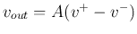
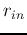
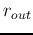
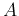

Next:
About this document ...
Up:
summary
Previous:
Semiconductor devices
Op-Amp circuits

large , small , large gain 
Based on ``virtual ground'' assumption, analysis of op-amp circuits can be simplified.
Ruye Wang 2019-05-27